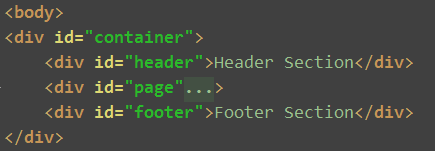

stick footer布局
要求:
1. 如果页面内容不够长的时候，页脚块粘贴在视窗底部；
2. 如果内容足够长时，页脚块会被内容向下推送;
方法:
页面DOM结构
1. < html >和< body >标签：设置其高度为100%，这样子元素方便设置百分比的高度。
2. 设置一个容器包裹整个页面，此处我设计了一个< div id="container" >，设置其最小高度高度为100%， min-height:100%;
这样可以满足第一条条件，即内容不足时，footer也在底部。同时设置其position: relative;，方便第五步设置footer的位置。
3. page设置padding-bottom，使其值等于footer的高度，此处设置的是60px。
4. footer设置 position: absolute;bottom: 0;height: 60px;此处60px和page的padding-bottom相等。